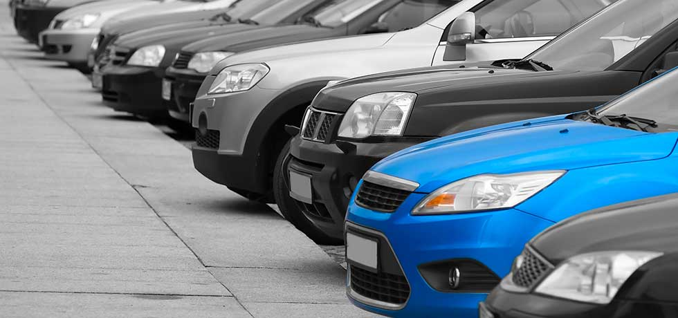

Cartalogue



Aston Martin's confirmed new convertible will arrive in spring 2018. We've got fresh pictures of the DB11 Volante in action. Aston Martin has confirmed it is preparing a convertible version of its new DB11 grand tourer for spring 2018, and after the British marque released a handful of teaser shots for the upcoming DB11 Volante, we’ve now received a flurry of spy shots, revealing the car in greater detail.
The DB11 Volante prototype wears some squared off bodywork over the rear wings, but we don’t think this is indicative of a major design difference. The same flowing lines and rear end of the coupe with C-shaped rear lights will be on the Volante, and while the new shots are the first look at the car’s face it’s un-surprising to see no changes here.
The latest photographs also show the DB11 Volante testing alongside a regular coupe version – a sneak glimpse at how the two new Astons compare to each other in the flesh.
Rather than a folding hard top roof, the DB11 Volante will use a lighter and less complicated soft-top arrangement. Power will come from the same 5.2-litre twin-turbo V12 engine as in the DB11 coupe, producing 600bhp and 700Nm of torque. An eight-speed automatic gearbox will drive power to the rear wheels.
With the extra strengthening needed for a convertible version, the Volante will be heavier than the 1,800kg DB11 coupe, which means the 0-62mph time will increase, up to around 4.3 seconds. A top speed of around 200mph will place it among the fastest convertibles on the road.
Inside, expect the same luxuriously-upholsered interior as the coupe but with a wait until 2018 on the cards, we expect to see a few updates to keep it fresh before it hits the showrooms. The Aston Martin DB11 Volante is likely to command a significant premium over the £154,900 DB11, perhaps costing as much as £175,000.